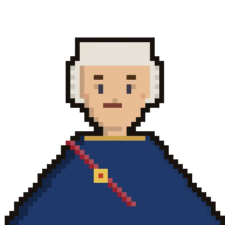

GEN. TORMASOW
Dowódca wojsk rosyjskich · Lv.28
HP
1794 / 1794
TADEUSZ KOŚCIUSZKO
Naczelnik powstania · z kosynierami · Lv.31
HP
1794 / 1794
4 kwietnia 1794 pod Racławicami. Przy wiejskim wiatraku Kościuszko staje na czele wojska i chłopów z kosami. Jak poprowadzi bitwę Naczelnik?
ZWYCIĘSTWO!
Kosynierzy zdobywają armaty, a Kościuszko zwycięża pod Racławicami. 4 kwietnia 1794 — iskra nadziei dla powstania.